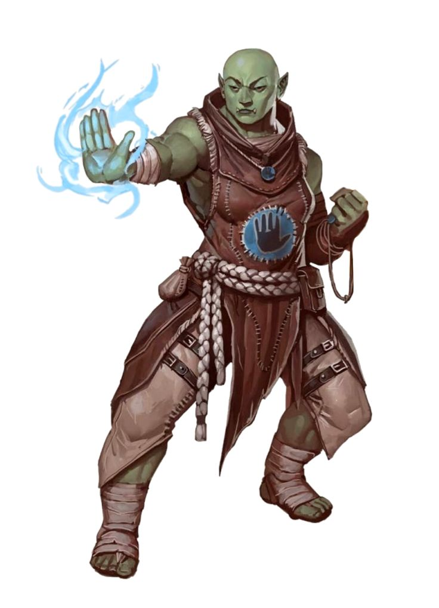

Для некоторых боевые искусства важны не только на поле боя - это их стиль жизни, философия, состояние души. Они совершенствуются в этих искусствах, не увлекаясь мечами и щитами: их тела сами являются оружием, способным калечить и убивать не хуже любого меча. Из-за приверженности древним учениям и строгой дисципдине таких персонажей называют монахами. Они могут быть как сосредоточенными аскетами из монастырей, так и вдохновенными бродягами-самоучками. Путь монаха - дисципдина, и только следующие этим путем достигают гармонии с собой.
Монахи прекрасно преодолевают даже самые неожиданные опасности и наносят сокрушительные удары, пользуясь уязвимостями противника. Они очень быстры и легко перемещаются по полю боя, помогая союзникам там, где особенно нужны.
Мировоззрение: Любое принципиальное.
КЗ:d8.
Стартовое богатство: 1d6 x 10 зм (35 зм в среднем).
Акробатика (Лвк), Верховая езда (Лвк), Внимание (Мдр), Запугивание (Хар), Знание (история) (Инт), Знание (религия) (Инт), Изворотливость (Лвк), Исполнение (Хар), Лазание (Сил), Плавание (Сил), Проницательность (Мдр), Профессия (Мдр), Ремесло (Инт), Скрытность (Лвк)
Пункты навыков за уровень: 4 + модификатор Интеллекта.
| Ур | БМА | Стойкость | Реакция | Воля | Прочее | Град ударов | Урон без оружия | Бонус к КБ | Быстрое перемещение |
|---|---|---|---|---|---|---|---|---|---|
| 1 | +0 | +2 | +2 | +2 | Дополнительная черта, град ударов, шокирующий кулак, мастер кулачного боя | -1/-1 | 1d6 | +0 | +0 футов |
| 2 | +1 | +3 | +3 | +3 | Дополнительная черта, уклонение | +0/+0 | 1d6 | +0 | +0 футов |
| 3 | +2 | +3 | +3 | +3 | Быстрое перемещение, отточенные маневры, непоколебимый разум | +1/+1 | 1d6 | +0 | +10 футов |
| 4 | +3 | +4 | +4 | +4 | Запас энергии ци (магия), замедление падения 20 футов | +2/+2 | 1d8 | +1 | +10 футов |
| 5 | +3 | +4 | +4 | +4 | Высокий прыжок, чистота тела | +3/+3 | 1d8 | +1 | +10 футов |
| 6 | +4 | +5 | +5 | +5 | Дополнительная черта, замедление падения 30 футов | +4/+4/-1 | 1d8 | +1 | +20 футов |
| 7 | +5 | +5 | +5 | +5 | Запас энергии ци (холодное железо/серебро), целостность тела | +5/+5/+0 | 1d8 | +1 | +20 футов |
| 8 | +6/+1 | +6 | +6 | +6 | Замедление падения 40 футов | +6/+6/+1/+1 | 1d10 | +2 | +20 футов |
| 9 | +6/+1 | +6 | +6 | +6 | Уклонение+ | +7/+7/+2/+2 | 1d10 | +2 | +30 футов |
| 10 | +7/+2 | +7 | +7 | +7 | Дополнительная черта, запас энергии ци (принципиальность), замедление падения 50 футов | +8/+8/+3/+3 | 1d10 | +2 | +30 футов |
| 11 | +8/+3 | +7 | +7 | +7 | Алмазное тело | +9/+9/+4/+4/-1 | 1d10 | +2 | +30 футов |
| 12 | +9/4 | +8 | +8 | +8 | Беспрепятственный шаг, замедление падения 60 футов | +10/+10/+5/+5/+0 | 2d6 | +3 | +40 футов |
| 13 | +9/+4 | +8 | +8 | +8 | Алмазная душа | +11/+11/+6/+6/+1 | 2d6 | +3 | +40 футов |
| 14 | +10/+5 | +9 | +9 | +9 | Дополнительная черта, замедление падения 70 футов | +12/+12/+7/+7/+2 | 2d6 | +3 | +40 футов |
| 15 | +11/+6/+1 | +9 | +9 | +9 | Дрожащая ладонь | +13/+13/+8/+8/+3/+3 | 2d6 | +3 | +50 футов |
| 16 | +12/+7/+2 | +10 | +10 | +10 | Запас энергии ци (адамантит), замедление падения 80 футов | +14/+14/+9/+9/+4/+4/-1 | 2d8 | +4 | +50 футов |
| 17 | +12/+7/+2 | +10 | +10 | +10 | Нестареющее тело, язык луны и солнца | +15/+15/+10/+10/+5/+5/+0 | 2d8 | +4 | +50 футов |
| 18 | +13/+8/+3 | +11 | +11 | +11 | Дополнительная черта, замедление падения 90 футов | +16/+16/+11/+11/+6/+6/+1 | 2d8 | +4 | +60 футов |
| 19 | +14/+9/+4 | +11 | +11 | +11 | Пустое тело | +17/+17/+12/+12/+7/+7/+2 | 2d8 | +4 | +60 футов |
| 20 | +15/+10/+5 | +12 | +12 | +12 | Совершенство, замедление падения с любой высоты | +18/+18/+13/+13/+8/+8/+3 | 2d10 | +5 | +60 футов |
Ношение брони и обращение с оружием:Монах умеет обращаться со следующим оружием: арбалет (легкий и тяжелый), боевой посох, дубинка, кама, кинжал, копье, короткий меч, короткое копье, нунчаки, пилум, праща, сай, сьянгам, сюрикен и топорик. Монахи не могут использовать доспехи и щиты. Если монах тяжело или средне нагружен, облачен в доспехи или вооружен щитом, он не может применять свои классовые модификаторы к КБ, а также способности быстрого перемещения и града ударов.
Бонус к КБ (Экс):Без доспеха и без нагрузки монах добавляет свой положительный модификатор Мудрости (если у него он есть) к КБ и ЗБМ. Кроме того, на 4 уровне он получает еще +1 к КБ и 3БМ, Этот бонус увеличивается за каждые четыре уровня монаха после 4 до максимума в +5 на 20 уровне. Эти модификаторы к КБ работают в том числе против атак касанием, а также когда монах застигнут врасплох, но не работают, если монах не может двигаться, беспомощен, облачен в доспехи, вооружен щитом, тяжело или средне нагружен.
Град ударов (Экс):Начиная с 1 уровня монах может в качестве полной атаки обрушить на врагов град ударов. В этом случае он может совершить на одну атаку больше, получая при этом штраф -2 ко всем атакам. Эти атаки могут представлять собои любую комбинацию из ударов без оружия и специальным монашеским оружием (для применения этой способности монаху необязательно иметь оружие в обеих руках). При граде ударов БМА, получаемый от уровней монаха, считается равным его уровню монаха. Это не влияет на БМА монаха в остальных случаях, например когда речь идет о требованиях к чертам или престиж-классам.
Начиная с 8 уровня монах проводит две дополнительных атаки, нанося град ударов, как если бы использовал черту Парное оружие+ (неважно, соответствует он требованиям этой черты или нет).
Начиная с 15 уровня монах проводит три дополнительных атаки, нанося град ударов‚ как если бы использовал черту Парное оружие++ (неважно, соответствует он требованиям этой черты или нет).
Монах прибавляет полный модификатор Силы к урону от града ударов, даже если наносит их неведущей рукой или оружием, которое держит в обеих руках. Он может заменять часть атак града ударов или их все боевыми маневрами разоружения, разрушения и сбивания с ног. Для нанесения града ударов он обязан или драться без оружия, или использовать оружие только из списка специального монашеского оружия. Если у монаха есть естественное оружие, он не может применять его для града ударов или атаковать им вместе с градом ударов в том же раунде.
Мастер кулачного боя:Начиная с 1 уровня монах получает черту Мастер кулачного боя в качестве дополнительной. Он может атаковать кулаками, коленями, локтями и ногами и способен наносить удары без оружия, даже если его руки заняты. У монаха, дерущегося без оружия, не бывает неведущей руки, и он применяет свой полный модификатор Силы ко всему урону от атак без оружия. Монах может наносить несмертельный урон без штрафов к попаданию, хотя обычно его атаки наносят смертельный урон. Вв время захвата он также может выбрать, будет ли наносить смертельный или несмертельный урон.
Для расчета действия заклинаний и иных эффектов, усиливающих естественное и рукотворное оружие, удар монаха без оружия считается одновременно и естественным, и рукотворным оружием. Кроме того, монах также наносит больший урон своими атаками без оружия, чем другие гуманоиды - см. таблицу «Монах». В этой таблице указан урон для монахов среднего размера; монахи небольшого размера наносят меньше урона, а крупного - больше. Урон от их атак указан в таблице ниже.
| Уровень | Урон (небольшой размер) | Урон (крупный размер) |
|---|---|---|
| 1-3 | 1d4 | 1d8 |
| 4-7 | 1d6 | 2d6 |
| 8-11 | 1d8 | 2d8 |
| 12-15 | 1d10 | 3d6 |
| 16-19 | 2d6 | 3d8 |
| 20 | 2d8 | 4d8 |
Дополнительная черта: На 1 и 2 уровнях, а также каждые четыре уровня после этого монах получает дополнительную черту. Эти черты он выбирает из следующего списка: Боевые рефлексы, Захват+, Мастер импровизации, Отбивание стрел, Стиль скорпиона, Уворот и Универсальный метатель. На 6 уровне к этому списку добавляются черты Хаматулацу, Кулак горгоны, Подвижность, Разоружение+, Сбивание с ног+, Таран+ и Финт+. На 10 уровне к этому списку добавляются черты Гнев медузы, Ловля стрел, Удар на проходе, Улучшенный критический удар, Бросок Ци. На 14 уровне к этому списку добавляются черты Бросок Ци+. Монах может выбрать любую из этих черт, даже если не соответствует ее обычным требованиям.
Шокирующий кулак (Экс): На 1 уровне монах получает Шокирующий кулак в качестве дополнительной черты, даже если он не соответствует ее требованиям. На 4 уровне - и каждые четыре уровня после - монах обретает возможность ударом Шокирующего кулака повергать жертву не только в шок, но и в другие состояния. Любое такое состояние заменяет эффект шока на 1 раунд, а успешное прохождение испытания по-прежнему его отменяет. Начиная с 4 уровня удар Шокирующего кулака утомляет жертву; с 8 - дезориентирует на 1 минуту; с 12 - ошеломляет на 1d6+1 раундов; с 16 - делает навсегда слепой или глухой; с 20 - парализует на 1d6+1 раундов. Монах выбирает, в какое именно состояние повергнет жертву, до атаки. Эти эффекты не складываются (существо, ставшее дезориентированным от удара Шокирующего кулака, не начинает тошнить от повторного удара), но при повторном наложении состояния его длительность увеличивается.
Уклонение (Экс):Начиная со 2 уровня монах может с легкостью уклоняться даже от самых необычных атак и магических воздействий. Если монах подвергается воздействию, позволяющему пройти испытание Реакции для уменьшения урона вдвое, то в случае успеха он не получает урона совсем. Если монах беспомощен, уклонение не работает. Эту способность можно использовать, только если монах облачен в легкие доспехи или не носит доспехов.
Быстрое перемещение (Экс):Начиная с 3 уровня базовая скорость монаха увеличивается, как показано в таблице «Монах». Это увеличение является бонусом (усиление). Если монах тяжело или средне нагружен либо облачен в доспехи, этот бонус не действует.
Отточенные маневры (Экс):Начиная с 3 уровня при расчете МБМ монаха используется его уровень в этом классе, а не БМА. На БМА, полученный от других классов, это не влияет, и он учитывается по обычным правилам.
Непоколебимый разум (Экс):Монах 3 уровня и выше получает +2 к испытаниям против заклинаний и иных эффектов школы очарования.
Запас энергии ци (Св):На 4 уровне монах получает запас ци - особой энергии, которую он использует, чтобы творить поразительные вещи.
Максимальное количество ци у монаха равно 1/2 его уровня + модификатор его Мудрости. Пока у монаха есть хотя бы 1 ци, он может наносить удар ци.
На 4 уровне удар ци считается эквивалентом магического оружия, если речь идет о преододении СУ. На 7 уровне его атаки без оружия также считаются эквивалентом серебра и холодного железа, если речь идет о преодолении СУ. На 10 уровне его атаки без оружия также считаются эквивалентом оружия с принципиальным мировоззрением, если речь идет о преодолении СУ. На 16 уровне его атаки без оружия считаются эквивалентом адамантина, если речь идет о преодоленин СУ и твердости предметов.
Потратив 1 ци, монах может произвести одну дополнительную атаку со своим максимальным модификатором атаки, когда наносит град ударов. Кроме того, он может потратит 1 ци, чтобы на 1 раунд увеличить свою скорость на 20 футов. Наконец, он вправе потратить 1 ци, чтобы получить бонус (уклонение) +4 к КБ на 1 раунд. Любая из вышеперечисленных способностей применяется в качестве быстрого действия. В дальнейшем у монаха появляются дополнительные способности, расходующие его ци. Запас энергии ци возобновляется каждое утро после 8 часов сна или медитации; эти часы необязательно должны идти подряд.
Замедление падения (Экс):Начиная с 4 уровня монах может замедлять свое падение, если рядом с ним есть стена. Когда он обретает эту способность, урон от падения для него считается, как если бы высота была на 20 футов меньше. На более высоких уровнях это число увеличивается (т. е. из общей высоты падения вычитается все больше футов), а на 20 уровне монах при наличии рядом с ним стены способен падать с любой высоты, не получая урона.
Высокий прыжок (Экс):Начиная с 5 уровня монах прибавляет свой уровень ко всем проверкам Акробатики для прыжков как в высоту, так и в длину. Даже когда он прыгает с места, длина и высота прыжка считаются так, как если бы он прыгал с разбега. Потратив 1 ци (быстрое действие), монах получает на 1 раунд бонус +20 к проверкам Акробатики при прыжках.
Чистота тела (Экс):Начиная с 5 уровня монах становится невосприимчивым ко всем болезням, включая магические и сверхъестественные.
Целостность тела (Св):Начиная с 7 уровня монах может в качестве основного действия исцелять свои ранения. Потратив 2 ци, он восстанавливает количество ПЗ, равное его уровню монаха.
Уклонение+ (Экс):Начиная с 9 уровня способность монаха уклоняться от опасностей улучшается. Монах попрежнему не получает урона в случае успешного испытания Реакции, а при провале получает лишь половину урона. Если монах беспомощен, уклонение+ не работает.
Алмазное тело (Св):Начиная с 11 уровня монах становится невосприимчивьм к любым ядам.
Беспрепятственный шаг (Св):Начиная с 12 уровня монах обретает способность волшебным образом мгновенно перемещаться на значительные расстояния, как если бы он применял заклинание дверь в пространстве. Такое перемещение является сопутствующим действием, расходующим 2 ци. УЗ монаха для этой способности равен его уровню в классе. Брать с собой других существ нельзя.
Алмазная душа (Экс):С 13 уровня у монаха появляется УкМ, равная его текущему уровню монаха + 10. Любой заклинатель должен пройти проверку УЗ (1d20+УЗ) для преодоления УкМ монаха, чтобы воздействовать на него магией.
Дрожащая ладонь (Св):Начиная с 15 уровня монах может вызвать вибрации в теле другого существа, которые впоследствии способны убить его в выбранный монахом момент. Эту способность он может применить только раз в день и должен объявить об ее использовании заранее. На существ, невосприимчивых к критическим ударам, применение дрожащей ладони не действует.
Начиная с 15 уровня монах может вызвать вибрации в теле другого существа, которые впоследствии способны убить его в выбранный монахом момент. Эту способность он может применить только раз в день и должен объявить об ее использовании заранее. На существ, невосприимчивых к критическим ударам, применение дрожащей ладони не действует.
Нестареющее тело (Экс):Начиная с 17 уровня монах не получает штрафов к характеристикам за возраст и становится невосприимчивым к магическому старению. Любые штрафы, появившиеся у него до этого момента, остаются. Бонусы за возраст применяются по обычным правилам. Хоть монах и не подвержен эффектам старения, он все равно умирает от старости, когда проживает весь свой срок.
Язык луны и солнца (Экс):Монах 17 уровня или выше может говорить с любым живым существом.
Пустое тело (Св):На 19 уровне монах обретает способность становиться эфирным на 1 минуту, как если бы он использовал заклинание выход в эфир. Такой выход является сопутствующим действием, расходующим 3 ци. Эта способность действует только на монаха - других существ он с собой брать не может.
Совершенство:На 20 уровне монах становится волшебным существом. Для заклинаний и магических эффектов он считается потусторонним существом, а не гуманоидом. Монах также получает СУ 10/хаос, что позволяет ему игнорировать первые 10 пунктов урона от любой атаки, кроме атак хаотичным оружием или естественным оружием существа, у которого есть аналогичное СУ. В отличие от прочих потусторонних существ, монаха можно воскресить, как если бы он принадлежал к своему изначальному типу существ.
Монах может дисциплинировать свое тело, чтобы удерживать больше ци, поддерживая строгие принципы обета. Придерживаясь принципов его обета, запас энергии ци монаха увеличивается на величину, указанную в описании обета. Каждый обет сопровождается штрафом или ограничением, чтобы компенсировать это увеличение ци. Монах может принять обет на любом уровне, но он не добавляет к своему запасу энергии ци, пока не получит Запас Энергии Ци как классовую черту.
Способность принимать эти обеты заменяет классовую черту Непоколебимый Разум, даже если монах откажется от всех своих обетов. Если монах сознательно и добровольно нарушил свою клятву, его запас энергии ци уменьшается до 0 (как если бы он потратил все свои очки ци), и он не может пополнять свой запас или использовать способности, для которых требуется ци или запас энергии ци, пока он искупит вину.
Искупление требует повторения его клятвы в сопровождении заклинания покаяние. После искупления возвращается обычный запас энергии ци (без бонуса от обета). Если он поддерживает ранее нарушенный обет в течение целого месяца, его запас энергии ци восстанавливает дополнительные очки после принятия обета, и он может решить, продолжить ли его обет или отказаться от своего обета без штрафа.
Как только монах откажется от обета в этой игре, он никогда не сможет получить дополнительные ци из этого обета. Монах может иметь несколько обетов. Их эффекты и увеличение его запаса энергии ци складываются.
Если монах нарушает обет, он переносит потерю ци, описанную выше; Искупление означает, что монах восстанавливает дополнительные ци из своих не нарушенных обетов, но дополнительные ци из нарушенного обета не возвращается, пока он не завершит месячное обязательство (по сути, нарушение одного обета не влияет на другие обеты, как только монах искупает вину).
Обет безбрачия:Монах должен воздерживаться от всех сексуальных и интимных физических нагрузок. Монах с этой клятвой доводит ее до крайности, отказываясь даже делить комнату с другим человеком, или спит на противоположной стороне лагеря от других людей в группе. Монах-целибат не может касаться других или заставлять других касаться его (включая заклинания касания союзников). Наносить удары по врагам или сражаться с врагами не запрещено, но монах избегает любых мирных или приятных контактов. Монах с этим обетом увеличивает запас энергии ци на 1 ци на каждые 5 уровней монаха (минимум +1).
Обет цепей:Либо из покаяния или чтобы привлечь внимание к страданиям порабощенных, монах носит кандалы на запястьях и ногах. Это дает монаху -1 штраф к броскам атаки и КБ и уменьшает его движение на 10 футов. Если он временно не может носить свои цепи, он может нести камни или какой-либо другой тяжелый груз (включая среднюю или тяжелую броню), чтобы симулировать это страдание. Монах с этой клятвой увеличивает запас энергии ци на 1 ци на каждые 3 уровня монаха (минимум +1).
Обет чистоты:Монах, выполняющий эту клятву, должен мыться ежедневно. Он должен переодеваться ежедневно или вскоре после того, как его одежда испачкается. Его внешность должна быть безупречной, в том числе аккуратно выбрит или подстрижен на лысо (и, для мужских монахов, поддерживать чисто выбритое лицо). Его клятва запрещает ему охотно прикасаться к грязи, болезням, мертвым или нежити (хотя он может пытаться очистить или лечить тех, кто страдает от болезней), хотя использование искусственного оружия для нападения на этих существ разрешено. Монах с этим обетом увеличивает запас энергии ци на 1 ци на каждые 5 уровней монаха (минимум +1).
Обет поста:Монах не ест ничего, кроме риса (или подобного мягкого, основного продукта) и не пьет ничего, кроме воды. В определенные дни (обычно один раз в месяц или во время религиозного праздника) он может съесть небольшую порцию другой простой, мягкой пищи для поддержания правильного питания. Монах не может использовать табак, наркотики, зелья, алхимические предметы, требующие еды или питья, или любые другие вещи, которые можно считать едой или питьем. Монах с этим обетом увеличивает запас энергии ци на 1 ци на каждые 6 уровней монаха (минимум +1).
Обет мира:Монах должен стремиться к достижению мира и может использовать насилие только в качестве крайней меры. Он никогда не сможет нанести первый удар в бою. При атаке он должен использовать защитное действие боя или общее действие Обороны в течение первых 2 раундов. Он должен всегда давать своему противнику возможность сдаться и не может преднамеренно убить другое существо, на которое можно разумно повлиять, чтобы бежать или присоединиться к цивилизованному обществу в качестве продуктивного члена (очевидно, это исключает многих монстров). Многие монахи, принявшие эту клятву, учатся хватать и удерживать противников, связывая их специализированными узлами, которые позволяют им свободно работать после достаточных усилий. Многие монахи мира являются вегетарианцами. Монах с этим обетом увеличивает запас энергии ци на 1 ци на каждые 5 уровней монах (минимум +1).
Обет бедности:Монах, принимающий обет бедности, никогда не должен владеть более чем шестью вещами - простым набором одежды, парой сандалий или туфель, миской, мешком, одеялом и любым другим предметом. Пять из этих предметов должны быть простого изготовления, хотя один может иметь определенную ценность (часто это реликвия, имеющая большое личное значение для монаха). Монах никогда не сможет хранить на себе больше денег или богатства, чем ему нужно, чтобы накормить, искупаться и укрыться в течение 1 недели в скромных условиях. Он не может занимать или нести богатство или предметы стоимостью более 50 зм, которые принадлежат другим. Ему разрешено принимать и использовать лечебные зелья (или подобные магические предметы, где предмет потребляется и после этого теряет ценность) от других существ. Монах с этим обетом увеличивает запас энергии ци на 1 ци на каждом уровне монаха, которым он обладает.
Обет молчания:Монах не должен говорить ни слова и стараться быть спокойным в своих действиях. Случайные звуки и звуки битвы (такие как звук кулака или оружия, поражающего противника) не влияют на его клятву, хотя большинство монахов с этим обетом выбирают свое оружие и противников так, чтобы минимизировать даже эти звуки. Монаху разрешено шуметь невокально, чтобы привлечь других (например, топая или хлопая в ладоши). Монаху разрешается использовать жесты и движения для общения с другими людьми (включая язык жестов) и ему разрешено писать. Монах с этим обетом увеличивает запас энергии ци на 1 ци на каждом уровне монаха, которым он обладает.
Обет истины:Монаху не разрешается умышленно говорить какую-либо ложь, в том числе блефовать, заявлять о полуистинах с намерением обмануть, преувеличивать, говорить ложь во благо и так далее. Это относится ко всем формам общения. Если представить обстоятельства, когда рассказ об Истине принесет ущерб другому, монах будет молчать. Многие монахи этой клятвы также принимают клятву тишины, чтобы показать свою приверженность. Монах с этим обетом увеличивает запас энергии ци на 1 ци на каждые 5 уровней монаха (минимум +1).
Монах, переставший быть принципиальным, не может больше получать урови монаха, но сохраняет все способности класса.
Назад к списку классов